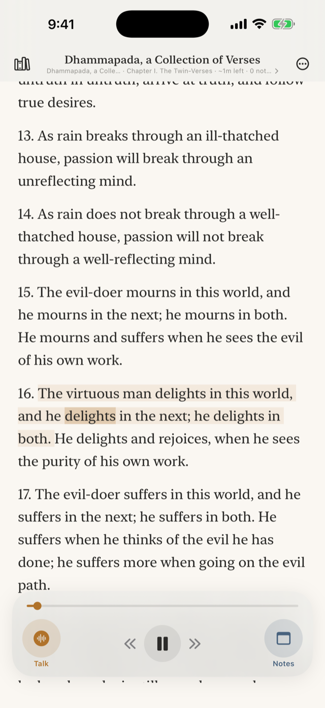
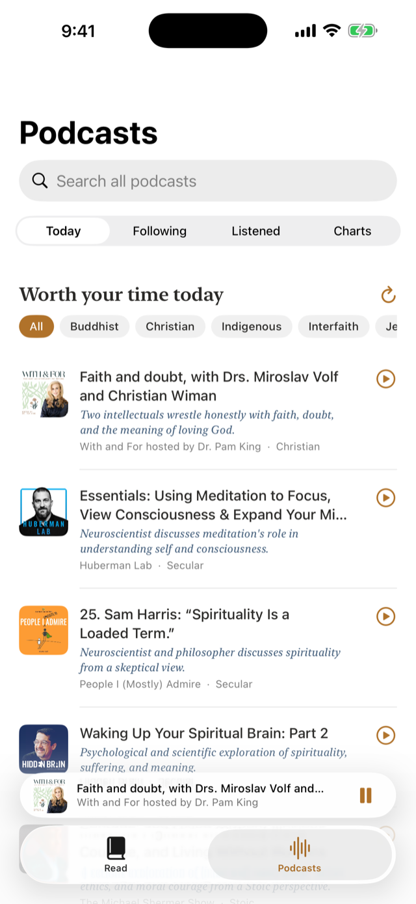
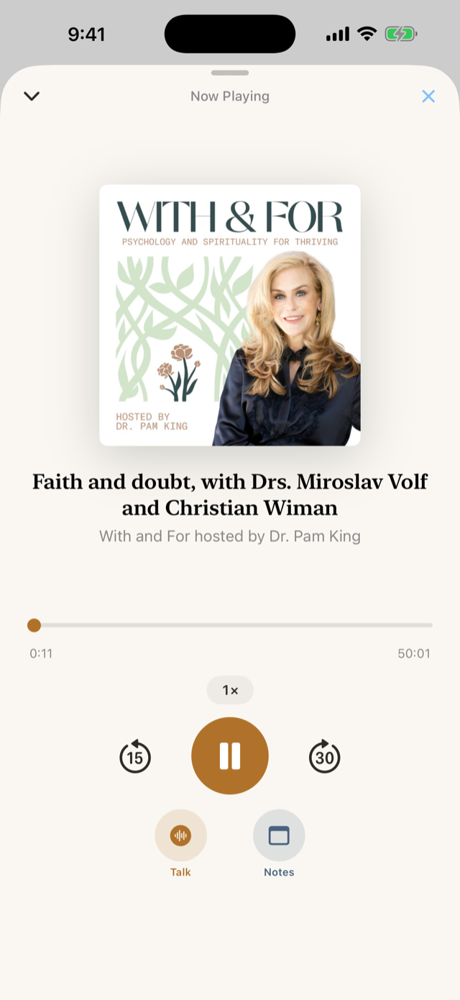

Chapter I
Talk back to the great books — and the great podcasts.
Landfall reads the books that have outlived their centuries and the week's best podcast conversations — aloud, while your hands are busy. When a line stops you, you stop it back: say what you think, argue it out with an AI companion that knows the passage or the moment you're in, and keep what you said pinned to the words — or the minute — that caused it.
Coming free to the App Store
Chapter II
A practice, not a feed.
Read to you
The Gospels, the Gita, the Dhammapada, Marcus Aurelius — a hundred books built in, read in a voice worth hearing. Dense translations can be rewritten plainer; the original is always kept.
And God said, Let there be light: and there was light…
Think out loud
Tap Talk and say your thought — about the page you’re on or the episode you’re in — or say “note that” and it lands in the margin, in your words, exactly where you were. Your notes become your own commentary.
“…note that — I don’t buy his argument here.”
This week’s conversations
Every day Landfall sifts the top podcast charts for the few episodes that sit with the big questions — most were never tagged “religion.” Chapter IV tells the whole story.
Kate Bowler challenges Stoicism’s most famous idea
A neuroscientist on what meditation does
Faith and doubt, with Miroslav Volf



Chapter III
One hundred books that refused to die.
…and your own — bring any book, in Word or plain text.
Any of them can be rewritten at an easier reading level — the whole book, chapter by chapter, with the original always one tap away.
Chapter IV
The old questions, still being asked.
Every morning Landfall reads the top podcast charts in every category — a thousand shows, most never filed under “religion” — and keeps the few episodes that sit with the big questions. A theologian honest about doubt. A neuroscientist on what meditation does. A skeptic taking the sacred seriously.
And the loop you learned in the books is the loop here: stop an episode mid-thought, talk it out with a companion that heard what you heard, and the note lands on the minute. Follow shows, stream or download, and see everything you’ve listened to.
Chapter V
Quiet, by design.
- No accountNothing to sign up for. Open it and read.
- No feedThe daily digest is finite. You can finish it.
- No trackingNo analytics, no ads, no server of ours holding your words.
- Your key, your KeychainAI features are optional and bring-your-own-key — stored on your iPhone, sent only to OpenAI, removable any time.